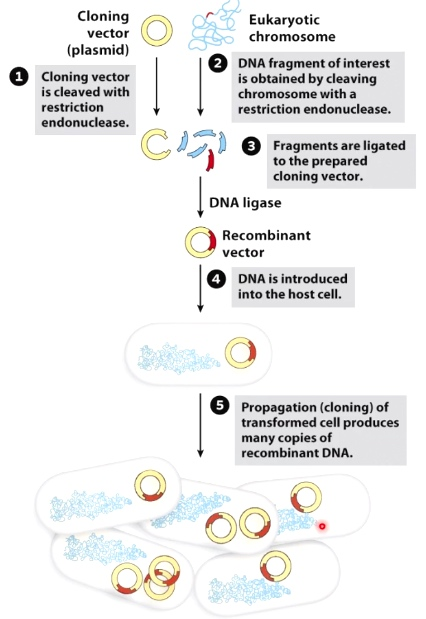

Overview of Molecular Cloning
A common techinique in genetic engineering is to insert a new gene into a loop of bacterial DNA called plasmid.
The molecular tool used to cut DNA is a restriction Enzyme such as EcoR1 for the base letter sequence GAATTC. The enzyme then cut the plasmid at this point allowing a new piece of DNA to be inserted. When it cuts, EcoR1 leaves a sticky end. This helps the new gene to attach.
The joins are then stiched together by another enzyme called DNA ligase.
The Details of Molecular Cloning
Approaches
- Public Consortium Approach
- Celera Approach

- Cut vector and insert with restriction enzymes
- Ligate vector to insert
- Transform plasmids into host(usually bacteria)
Cleave: restriction endonuclease
Combine: DNA ligase
Restriction Enzymes
EcoR1 restriction endonuclease's cleavage site has sticky ends.
PvuII restriction endonuclease's cleavage site has blunt ends.
If one of two restriction enzymes has sticky ends, then this allows for directional cloning.
Example(Directional cloning is not always possible)
pBR322. There were very few restriction enzyme could by used. There are 2 antibiotic resistence genes on the vector resistant to Ampicillin and Tetracycline.
Select clones with inserts by antibiotic sensitivity.
If we insert to tetracycling by BamHI, then the bacteria can grow in Ampicillin but not Tetracycline.
But we do not know which direction we insert into vector, now we can use restriction enzyme mapping.
We want the first figure that the HidIII site is near EcoR1 site.
Improved Cloning
The inserts could be inserted into multiple cloning site(MCS), which also known as a polylinker . The MCS is in the context of a portion of the lacZ gene.
The lacZ gene contains lots of different amino acids, which could produce a protein to cleave a molecule called x gel. The cleave will cause the colonies of the bacteria to turn blue.
If no insert present in lac Z, it will present plue colonies. If insert present, there will be white colonies. If we see white area, then our clony is sucessful.
In the example of human DNA insertion. The bacterial will grow in CmR and will be white. Because there is anti CmR genes and the DNA is inserted into LacZ gene parts.
Other types of cloning
- TA cloning
- Gibson assembly
- Golden Gate assembly
Do not use restrictio enzymes and some do not use DNA ligase, but the basic principle is the same(vector + insert = clone)
Use hybridization to Identify Bacteria with a Clone of a Specific Human Gene
DNA Sequencing
The most commony used DNA sequencing strategy relies on Sanger Dideoxy.
Which is based on the fact that the DNA chain can grow only if 3' prime hydroxyl group is available.
A small amount og synthetic nucleotides called dideoxy nucleotides are added to the reaction mixture. The dideoxynucleotide has a hydrogen atom rather than a hydroxyl group on its 3' carbon. So it cannot form a phosphodiester bond with another nucleotide and thus terminates the chain.
Three Participants
- Tamplate DNA
- Primers
- Dideoxynucleotides
- ddATP, ddGTP, ddCTP, ddTTP(labeled woth four different fluorescent dyes)
- Deoxynucleotides
- dATP, dGTP, dCTP, dTTP
- DNA polymerase 1
By the end of the reaction period, a population of DNA of various sizes arre produced. Placed in a small capillary tube gel for electrophoresis. The gel slows down the DNA fragments which are negatively charged migrate toward the positive electrode. The largest fragment moves the slowest.
A laser detector is detecting the color of different dideoxynucleotides. So we can get to know the template DNA sequence.
Illumina Sequencing by Synthesis
The Illumina sequencing work flow is composed of 4 basic steps
- Sample preparation
- Cluster generation
- Sequencing
- Data analysis
Sample prep
All the preparation methods add adaptors to the ends of the DNA fragments.
Clustering
Each fragment molecule is isothermally amplified. The flow cell is a glass slide with lanes. Each lane is a channel coated with a lawn, composed of two types of oligos.

Coming oligos is complimentary to the adaper region on one of the fragment strands.

A polymerase creates a complement of the hybridized fragment.
The doubled stranded molecule is denatured and the original template is washed away.
The strand is clonally amplified through bridge amplification.
The the bridge is denatured, resulting in 2 single-stranded copy of molecule tethered to the flow cell.
The process is then repeated over and over
After amplification, the reverse strands are cleaved and washed off.
The 3' ends are blocked to prevent unwanted priming.
Sequencing
With each cycle, fluorescently tagged nucleotides compete for addition for the growing chain. Only one is coorperated based on the sequence of the template.
After the addition of each nucleotide, the clusters are excited by a light source. The characteristic flurescent signal is emitted.
This process is called Sequencing-by-Synthesis.
The number of cycles determines the length of the read.
The emission wave length, along with the signal intensity, determins the base call. For a given cluster, all identical strands are read simultaneously.
Then the read is growing in the repeat bridge amplification.